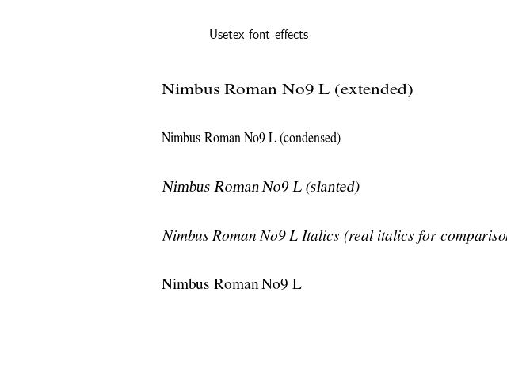

Version 3.1.2
Note
Click here to download the full example code
This script demonstrates that font effects specified in your pdftex.map are now supported in pdf usetex.
import matplotlib
import matplotlib.pyplot as plt
matplotlib.rc('text', usetex=True)
def setfont(font):
return r'\font\a %s at 14pt\a ' % font
for y, font, text in zip(range(5),
['ptmr8r', 'ptmri8r', 'ptmro8r',
'ptmr8rn', 'ptmrr8re'],
['Nimbus Roman No9 L ' + x for x in
['', 'Italics (real italics for comparison)',
'(slanted)', '(condensed)', '(extended)']]):
plt.text(0, y, setfont(font) + text)
plt.ylim(-1, 5)
plt.xlim(-0.2, 0.6)
plt.setp(plt.gca(), frame_on=False, xticks=(), yticks=())
plt.title('Usetex font effects')
plt.savefig('usetex_fonteffects.pdf')
Total running time of the script: ( 0 minutes 1.157 seconds)
Keywords: matplotlib code example, codex, python plot, pyplot Gallery generated by Sphinx-Gallery